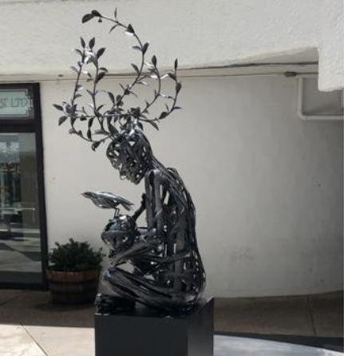
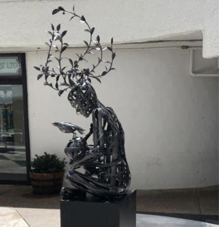

Belen Sorzana is an Argentinian artist, pronouns she/her, born in Buenos Aires on June 2, 1973. In 1994 she began her path into the arts through the Asociación Estimulo de Bellas Artes and the Mutual de Estudiantes Egresados de Bellas Artes in Buenos Aires, Argentina. She got into the Prilidiano Pueyrredon Fine Arts School in 1995. Belen traveled to Paris in 2001, where she resided for a year and specialized in drawing at the National Fine Arts School of Paris. She also worked at the Fine Arts Studios of the City of Paris, in sculpture, moldery, drawing, and printing workshops.
 

In 2002, she returned to Argentina and obtained her fine arts diploma, with a specialization in sculpture. Belen worked on design and art in her private studio between 2002 and 2010. She moved to the United States in 2011 and went to the Art Students' League of New York, where she attended drawing and welding workshops. She worked there until 2015, at which point she obtained a private studio at 3rd Rail Studios, New Rochelle, New York. Belen returned to Argentina in 2016 and worked independently in art and design until 2018, the year she moved back to the States. She currently resides in the state of Maryland and works at her private studio.